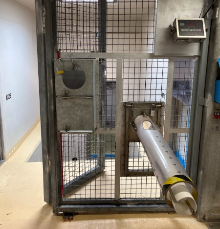
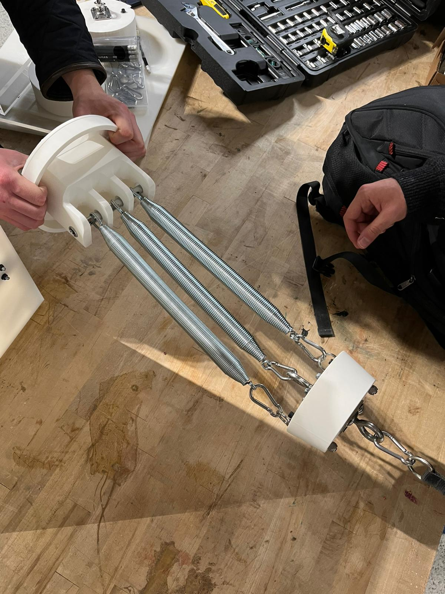

Toronto Zoo, 2025–2026
My undergraduate capstone team designed a spring-based rowing device for Charlie, a western lowland gorilla at the Toronto Zoo undergoing physiotherapy for upper-limb dysfunction. The device was integrated into an existing blood-draw tube within her enclosure, allowing her to perform rehabilitation exercises independently. Springs were chosen over elastic bands and free weights due to their durability, safety, and ease of use for animal care staff.
While the mechanism itself was intentionally simple, significant engineering effort went into component selection and structural design. Spring constants were chosen to match Charlie's prescribed range of motion and therapeutic resistance targets. All load-bearing components were validated through hand calculations and finite element analysis to ensure a service life exceeding one year with a safety factor greater than 5. Following completion of the project, our team traveled to the Toronto Zoo to install the device and observe Charlie successfully using it for the first time.

